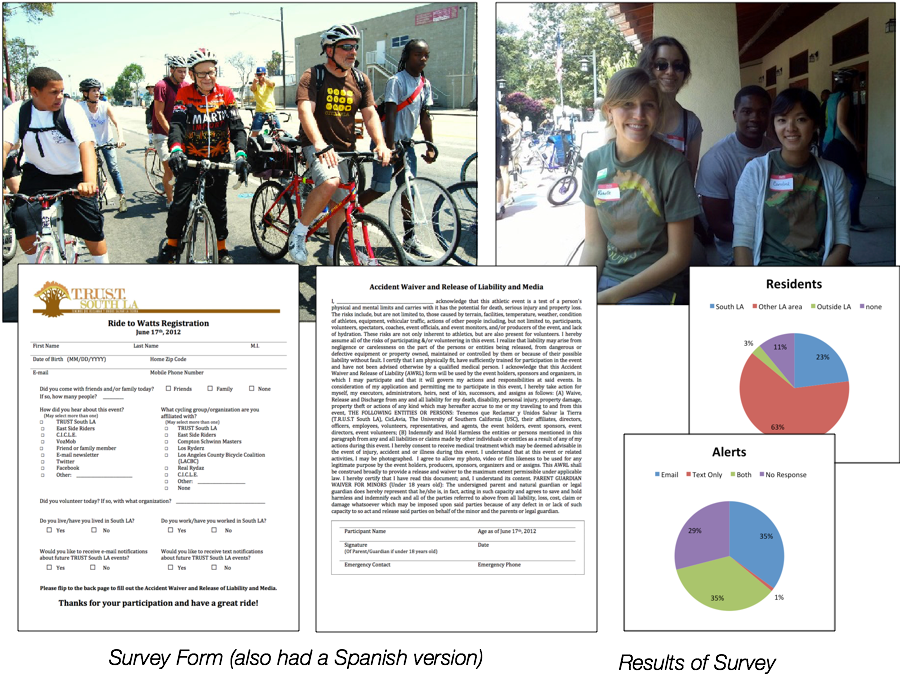
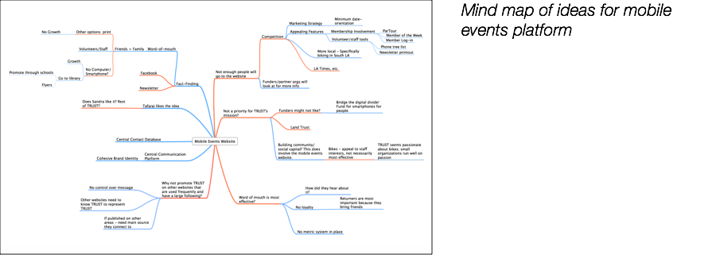
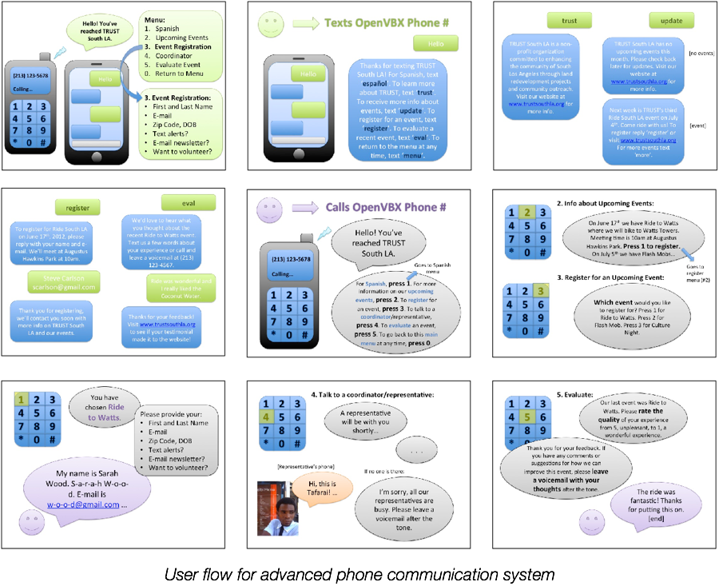
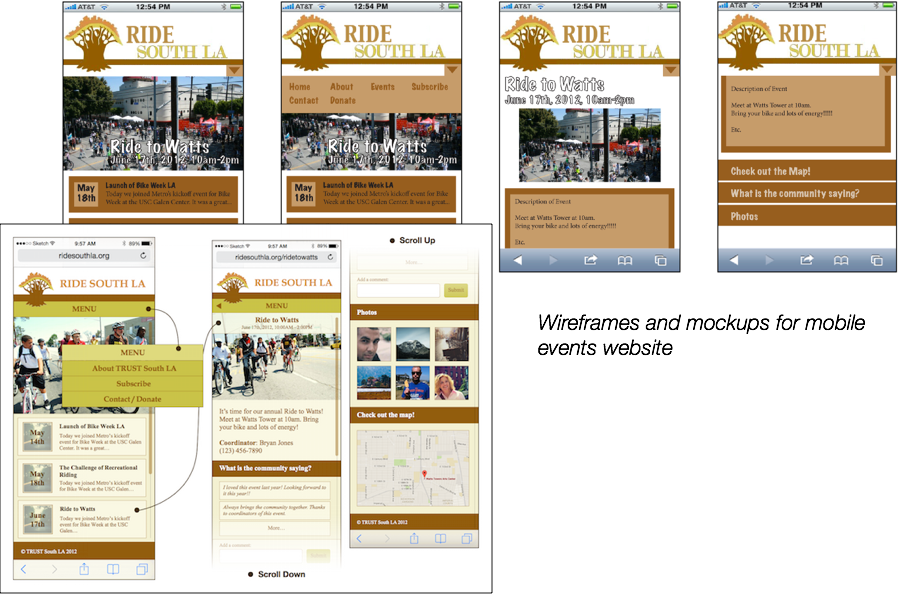

Mobile event promotion strategy for non-profit in Los Angeles
Scope: Project for Mobile News Incubator Fellowship
Client: TRUST South LA
Target Audience: Community Members of South Los Angeles
Team: Adson Afonso, Francois Cadieux, Richelle Gribble, Jacqueline Jackson, Elizabeth Krane, Caroline Win
My Role: Design Engineer, Fellow
Timeline: May - June 2012
In this summer fellowship, I collaborated with a team of engineering, communication, and business students to create a mobile-focused communication strategy for helping non-profit organization TRUST South LA spread awareness about their events. TRUST South LA is a community-based organization with the purpose of stabilizing the neighborhoods of south of downtown Los Angeles.
How might we create a mobile strategy for TRUST South LA to spread awareness about their events to local residents and provide different modes for members to ask question and sign up for events?
First, we met as a team with the TRUST South LA Director and staff members. We discussed their goals, ideas, and needs.
To familiarize ourselves with their members, we attended one of their major events, Ride to Watts, an annual community bike ride to major landmarks in South LA. The purpose of this event was to bring the community together and encourage healthy habits as well as appreciation of the history and culture of the south Los Angeles neighborhood.
While at this event we surveyed community members on their demographics, technology usage, and awareness and interest in TRUST’s events, learned about the culture of the organization, and experienced one of TRUST’s major events of the year.
As a team, we developed multiple proposals to present to TRUST. We came up with the concept of a mobile events website or webpage that specifically focused on TRUST’s events. We met again with the director and staff and determined the final proposals to develop into full prototypes with detailed reports and cost analyses.
Implementation of OpenVBX, a phone answering and texting system that sends notifications to subscribers and directs callers to various resources, updates on TRUST and upcoming events, and surveys.
Advantages: automates text messaging, makes phone calls easier to manage, highly accessible to anyone with a phone, appeals to diverse audiences, allows consistent event promotion, allows collection of data.
Primary User: South LA residents with basic landline or cell phone access. SMS for South LA youth and call flow and voice alerts for adults in South LA families.
Mobile-friendly website that emphasizes events, acts as a centralized communication platform for TRUST, stores a central contact database, and encourages community involvement.
Primary User: South LA residents with smart phone or computer and internet access.
Finally, we developed mockups, cost analyses, and detailed reports for our final proposal and presented the final products to TRUST, other fellows, and mentors. We also created documentation so that TRUST’s staff could easily take over the project.